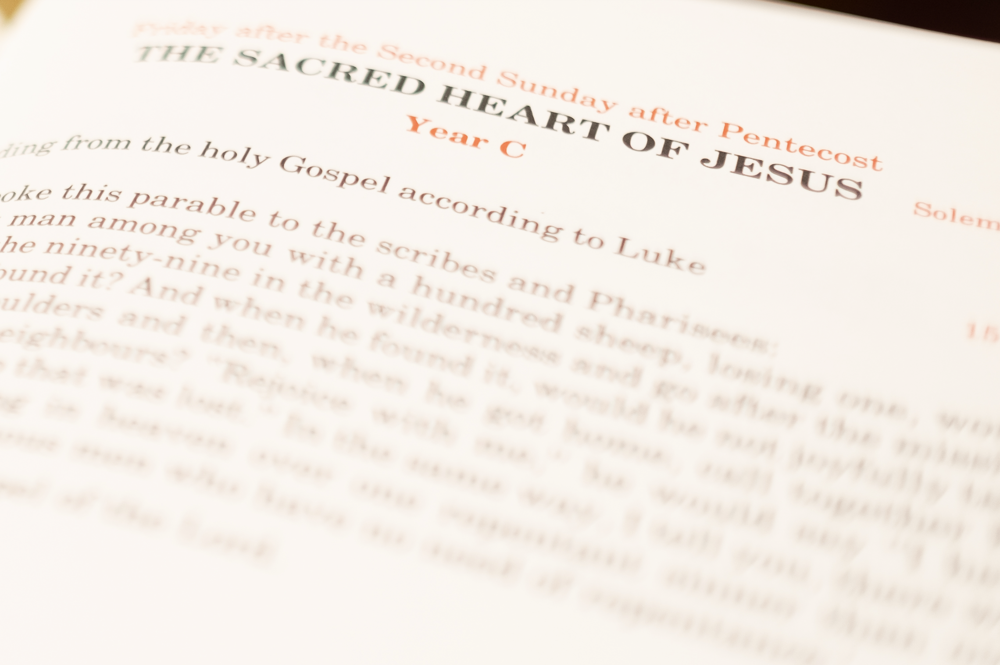

About Us
Sacraments
Bulletins
Youth
Get Involved
Contact Us
☰
×
Home
About Us
Sacraments
Bulletins
Youth
Get Involved
Contact Us

Bulletins
Check out our latest Bulletin:
SECOND SUNDAY OF EASTER
YEAR C
APRIL 27TH 2025
Our Past Bulletins:
EASTER SUNDAY OF THE RESURRECTION OF THE LORD - YEAR C - APRIL 20TH 2025
PALM SUNDAY OF THE PASSION OF THE LORD - YEAR C - APRIL 13TH 2025
FIFTH SUNDAY OF LENT - YEAR C - APRIL 6TH 2025
FOURTH SUNDAY OF LENT - YEAR C - MARCH 30TH 2025
THIRD SUNDAY OF LENT - YEAR C - MARCH 23RD 2025
SECOND SUNDAY OF LENT - YEAR C - MARCH 16TH 2025
FIRST SUNDAY OF LENT - YEAR C - MARCH 9TH 2025
EIGHTH SUNDAY IN ORDINARY TIME - YEAR C - MARCH 2ND 2025
SEVENTH SUNDAY IN ORDINARY TIME - YEAR C - FEBURARY 23RD 2025
SIXTH SUNDAY IN ORDINARY TIME - YEAR C - FEBRUARY 16TH 2025
FIFTH SUNDAY IN ORDINARY TIME - YEAR C - FEBRUARY 9TH 2025
FOURTH SUNDAY IN ORDINARY TIME - YEAR C - FEBRUARY 2ND 2025
THIRD SUNDAY IN ORDINARY TIME - YEAR C - JANUARY 26TH 2025
SECOND SUNDAY IN ORDINARY TIME - YEAR C - JANUARY 19TH 2025
FIRST SUNDAY IN ORDINARY TIME - YEAR C - JANUARY 12TH 2025
THE EPIPHANY OF THE LORD - YEAR C - JANUARY 5TH 2025
THE HOLY FAMILY OF JESUS, MARY AND JOSEPH - YEAR C - DECEMBER 29TH 2024
THE NATIVITY OF THE LORD - YEAR C - DECEMBER 25TH 2024
FOURTH SUNDAY OF ADVENT - YEAR C - DECEMBER 22ND 2024
THIRD SUNDAY OF ADVENT - YEAR C - DECEMBER 15TH 2024
SECOND SUNDAY OF ADVENT - YEAR C - DECEMBER 8TH 2024
FIRST SUNDAY OF ADVENT - YEAR C - DECEMBER 1ST 2024